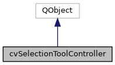

|
ACloudViewer
3.9.4
A Modern Library for 3D Data Processing
|
|
ACloudViewer
3.9.4
A Modern Library for 3D Data Processing
|
Controller class that manages all selection tools and their UI. More...
#include <cvSelectionToolController.h>


Classes | |
| struct | SelectionActions |
| Structure to hold all selection action pointers. More... | |
Public Types | |
| using | SelectionMode = ::SelectionMode |
| using | SelectionModifier = ::SelectionModifier |
Public Slots | |
| void | onSelectionFinished (const cvSelectionData &selectionData) |
| Handle selection finished from any tool. More... | |
| void | onModifierChanged (QAction *action) |
| Handle modifier action changes. More... | |
Signals | |
| void | selectionFinished (const cvSelectionData &selectionData) |
| Emitted when a selection operation is completed. More... | |
| void | selectionToolStateChanged (bool anyToolActive) |
| Emitted when selection tool state changes Connect this to ecvPropertiesTreeDelegate::setSelectionToolsActive() More... | |
| void | selectionPropertiesUpdateRequested (const cvSelectionData &selectionData) |
| Emitted when selection properties should be updated Connect this to ecvPropertiesTreeDelegate::updateSelectionProperties() More... | |
| void | selectionHistoryChanged () |
| Emitted when selection history changes. More... | |
| void | bookmarksChanged () |
| Emitted when bookmarks change. More... | |
| void | zoomToBoxRequested (int xmin, int ymin, int xmax, int ymax) |
| Emitted for zoom to box requests. More... | |
Public Member Functions | |
| void | initialize (QWidget *parent) |
| Initialize the controller with UI elements. More... | |
| void | setVisualizer (ecvGenericVisualizer3D *viewer) |
| Set the visualizer for all selection operations. More... | |
| template<typename UiType > | |
| void | setupActions (UiType *ui) |
| Setup all selection actions from a UI struct. More... | |
| void | setupActions (const SelectionActions &actions) |
| Setup all selection actions. More... | |
| void | connectHighlighter () |
| Connect highlighter for visual feedback. More... | |
| QObject * | getPropertiesDelegate () const |
| Get db root delegate (if connected) More... | |
| void | setPropertiesDelegate (QObject *delegate) |
| Set the properties delegate for selection properties updates. More... | |
| cvRenderViewSelectionReaction * | registerAction (QAction *action, SelectionMode mode) |
| Register an action for a selection mode. More... | |
| void | registerModifierActions (QAction *addAction, QAction *subtractAction, QAction *toggleAction) |
| Register the selection modifier action group. More... | |
| void | registerManipulationActions (QAction *growAction, QAction *shrinkAction, QAction *clearAction) |
| Register grow/shrink/clear actions. More... | |
| void | disableAllTools (cvRenderViewSelectionReaction *except=nullptr) |
| Disable all selection tools. More... | |
| bool | isAnyToolActive () const |
| Check if any selection tool is active. More... | |
| SelectionMode | currentMode () const |
| Get the current active selection mode. More... | |
| bool | handleEscapeKey () |
| Handle ESC key to exit selection tools. More... | |
| cvViewSelectionManager * | manager () const |
| Get the selection manager. More... | |
| cvSelectionHighlighter * | highlighter () const |
| Get the selection highlighter. More... | |
| void | setSelectionPropertiesActive (bool active) |
| Update selection properties widget state. More... | |
| void | invalidateCache () |
| Invalidate cached selection data. More... | |
Static Public Member Functions | |
| static cvSelectionToolController * | instance () |
| Get the singleton instance. More... | |
| static bool | isPCLBackendAvailable () |
| Check if PCL backend is available. More... | |
Controller class that manages all selection tools and their UI.
This class follows ParaView's pattern of separating selection tool management from the main window. It encapsulates all the selection tool creation, activation, and UI synchronization logic.
Reference: ParaView's pqStandardViewFrameActionsImplementation
Definition at line 50 of file cvSelectionToolController.h.
Definition at line 54 of file cvSelectionToolController.h.
Definition at line 55 of file cvSelectionToolController.h.
|
signal |
Emitted when bookmarks change.
| void cvSelectionToolController::connectHighlighter | ( | ) |
Connect highlighter for visual feedback.
Definition at line 550 of file cvSelectionToolController.cpp.
References CVLog::PrintVerbose().
| cvSelectionToolController::SelectionMode cvSelectionToolController::currentMode | ( | ) | const |
Get the current active selection mode.
Definition at line 272 of file cvSelectionToolController.cpp.
References cvViewSelectionManager::getCurrentMode().
| void cvSelectionToolController::disableAllTools | ( | cvRenderViewSelectionReaction * | except = nullptr | ) |
Disable all selection tools.
| except | Tool to keep active (nullptr to disable all) |
Definition at line 240 of file cvSelectionToolController.cpp.
References cvRenderViewSelectionReaction::endActiveSelection(), cvRenderViewSelectionReaction::isActive(), selectionToolStateChanged(), and setSelectionPropertiesActive().
Referenced by handleEscapeKey().
|
inline |
Get db root delegate (if connected)
Definition at line 160 of file cvSelectionToolController.h.
| bool cvSelectionToolController::handleEscapeKey | ( | ) |
Handle ESC key to exit selection tools.
Definition at line 280 of file cvSelectionToolController.cpp.
References disableAllTools(), cvSelectionToolController::SelectionActions::hoverCells, cvSelectionToolController::SelectionActions::hoverPoints, cvSelectionToolController::SelectionActions::interactiveSelectCells, cvSelectionToolController::SelectionActions::interactiveSelectPoints, isAnyToolActive(), CVLog::PrintVerbose(), cvSelectionToolController::SelectionActions::selectBlocks, cvSelectionToolController::SelectionActions::selectFrustumBlocks, cvSelectionToolController::SelectionActions::selectFrustumCells, cvSelectionToolController::SelectionActions::selectFrustumPoints, cvSelectionToolController::SelectionActions::selectPolygonCells, cvSelectionToolController::SelectionActions::selectPolygonPoints, cvSelectionToolController::SelectionActions::selectSurfaceCells, cvSelectionToolController::SelectionActions::selectSurfacePoints, and cvSelectionToolController::SelectionActions::zoomToBox.
| cvSelectionHighlighter * cvSelectionToolController::highlighter | ( | ) | const |
Get the selection highlighter.
Definition at line 318 of file cvSelectionToolController.cpp.
References cvViewSelectionManager::getHighlighter().
| void cvSelectionToolController::initialize | ( | QWidget * | parent | ) |
Initialize the controller with UI elements.
| parent | Parent widget (usually MainWindow) |
Definition at line 67 of file cvSelectionToolController.cpp.
References CVLog::PrintVerbose().
|
static |
Get the singleton instance.
Definition at line 25 of file cvSelectionToolController.cpp.
| void cvSelectionToolController::invalidateCache | ( | ) |
Invalidate cached selection data.
Call this when scene content changes (e.g., new entity added/removed) to ensure stale selection data is not used.
Definition at line 559 of file cvSelectionToolController.cpp.
References cvViewSelectionManager::getPipeline(), cvSelectionPipeline::invalidateCachedSelection(), CVLog::PrintVerbose(), and cvViewSelectionManager::setSourceObject().
| bool cvSelectionToolController::isAnyToolActive | ( | ) | const |
Check if any selection tool is active.
Definition at line 266 of file cvSelectionToolController.cpp.
References cvRenderViewSelectionReaction::activeReaction().
Referenced by handleEscapeKey().
|
static |
Check if PCL backend is available.
Definition at line 454 of file cvSelectionToolController.cpp.
|
inline |
Get the selection manager.
Definition at line 224 of file cvSelectionToolController.h.
|
slot |
Handle modifier action changes.
Definition at line 379 of file cvSelectionToolController.cpp.
References data, CVLog::PrintVerbose(), SELECTION_ADDITION, SELECTION_DEFAULT, SELECTION_SUBTRACTION, SELECTION_TOGGLE, and cvViewSelectionManager::setSelectionModifier().
Referenced by registerModifierActions().
|
slot |
Handle selection finished from any tool.
Definition at line 337 of file cvSelectionToolController.cpp.
References cvSelectionData::count(), cvSelectionData::fieldTypeString(), cvSelectionData::isEmpty(), CVLog::PrintVerbose(), selectionFinished(), selectionPropertiesUpdateRequested(), and cvViewSelectionManager::setCurrentSelection().
Referenced by registerAction().
| cvRenderViewSelectionReaction * cvSelectionToolController::registerAction | ( | QAction * | action, |
| SelectionMode | mode | ||
| ) |
Register an action for a selection mode.
| action | The QAction to register |
| mode | The selection mode |
This method uses the simplified architecture that aligns with ParaView's pqRenderViewSelectionReaction pattern. All selection logic is contained in a single class without the need for intermediate manager/tool layers.
Definition at line 96 of file cvSelectionToolController.cpp.
References cvSelectionBase::getVisualizer(), onSelectionFinished(), CVLog::PrintVerbose(), cvRenderViewSelectionReaction::selectionFinished(), setSelectionPropertiesActive(), cvRenderViewSelectionReaction::setVisualizer(), CVLog::Warning(), ZOOM_TO_BOX, cvRenderViewSelectionReaction::zoomToBoxCompleted(), and zoomToBoxRequested().
Referenced by registerManipulationActions(), and setupActions().
| void cvSelectionToolController::registerManipulationActions | ( | QAction * | growAction, |
| QAction * | shrinkAction, | ||
| QAction * | clearAction | ||
| ) |
Register grow/shrink/clear actions.
Definition at line 215 of file cvSelectionToolController.cpp.
References CLEAR_SELECTION, GROW_SELECTION, CVLog::PrintVerbose(), registerAction(), and SHRINK_SELECTION.
Referenced by setupActions().
| void cvSelectionToolController::registerModifierActions | ( | QAction * | addAction, |
| QAction * | subtractAction, | ||
| QAction * | toggleAction | ||
| ) |
Register the selection modifier action group.
| addAction | Add selection action (Ctrl) |
| subtractAction | Subtract selection action (Shift) |
| toggleAction | Toggle selection action (Ctrl+Shift) |
Definition at line 172 of file cvSelectionToolController.cpp.
References onModifierChanged(), CVLog::PrintVerbose(), SELECTION_ADDITION, SELECTION_SUBTRACTION, and SELECTION_TOGGLE.
Referenced by setupActions().
|
signal |
Emitted when a selection operation is completed.
Referenced by onSelectionFinished().
|
signal |
Emitted when selection history changes.
|
signal |
Emitted when selection properties should be updated Connect this to ecvPropertiesTreeDelegate::updateSelectionProperties()
Referenced by onSelectionFinished().
|
signal |
Emitted when selection tool state changes Connect this to ecvPropertiesTreeDelegate::setSelectionToolsActive()
Referenced by disableAllTools(), and setSelectionPropertiesActive().
|
inline |
Set the properties delegate for selection properties updates.
Definition at line 165 of file cvSelectionToolController.h.
| void cvSelectionToolController::setSelectionPropertiesActive | ( | bool | active | ) |
Update selection properties widget state.
| active | Whether selection tools are active |
Definition at line 329 of file cvSelectionToolController.cpp.
References selectionToolStateChanged().
Referenced by disableAllTools(), and registerAction().
| void cvSelectionToolController::setupActions | ( | const SelectionActions & | actions | ) |
Setup all selection actions.
| actions | Structure containing all action pointers |
Definition at line 463 of file cvSelectionToolController.cpp.
References cvSelectionToolController::SelectionActions::addSelection, cvSelectionToolController::SelectionActions::clearSelection, cvSelectionToolController::SelectionActions::growSelection, HOVER_CELLS_TOOLTIP, HOVER_POINTS_TOOLTIP, cvSelectionToolController::SelectionActions::hoverCells, cvSelectionToolController::SelectionActions::hoverPoints, cvSelectionToolController::SelectionActions::interactiveSelectCells, cvSelectionToolController::SelectionActions::interactiveSelectPoints, CVLog::PrintVerbose(), registerAction(), registerManipulationActions(), registerModifierActions(), SELECT_BLOCKS, SELECT_FRUSTUM_BLOCKS, SELECT_FRUSTUM_CELLS, SELECT_FRUSTUM_POINTS, SELECT_SURFACE_CELLS, SELECT_SURFACE_CELLS_INTERACTIVELY, SELECT_SURFACE_CELLS_POLYGON, SELECT_SURFACE_POINTS, SELECT_SURFACE_POINTS_INTERACTIVELY, SELECT_SURFACE_POINTS_POLYGON, cvSelectionToolController::SelectionActions::selectBlocks, cvSelectionToolController::SelectionActions::selectFrustumBlocks, cvSelectionToolController::SelectionActions::selectFrustumCells, cvSelectionToolController::SelectionActions::selectFrustumPoints, cvSelectionToolController::SelectionActions::selectPolygonCells, cvSelectionToolController::SelectionActions::selectPolygonPoints, cvSelectionToolController::SelectionActions::selectSurfaceCells, cvSelectionToolController::SelectionActions::selectSurfacePoints, cvSelectionToolController::SelectionActions::shrinkSelection, cvSelectionToolController::SelectionActions::subtractSelection, cvSelectionToolController::SelectionActions::toggleSelection, ZOOM_TO_BOX, and cvSelectionToolController::SelectionActions::zoomToBox.
| void cvSelectionToolController::setupActions | ( | UiType * | ui | ) |
Setup all selection actions from a UI struct.
This method registers all selection-related QActions and creates the corresponding reactions. Call this once during MainWindow initialization.
| ui | Pointer to the UI object containing action pointers |
The UI object should have these actions:
| void cvSelectionToolController::setVisualizer | ( | ecvGenericVisualizer3D * | viewer | ) |
Set the visualizer for all selection operations.
Definition at line 75 of file cvSelectionToolController.cpp.
References CVLog::PrintVerbose(), and cvViewSelectionManager::setVisualizer().
|
signal |
Emitted for zoom to box requests.
Referenced by registerAction().